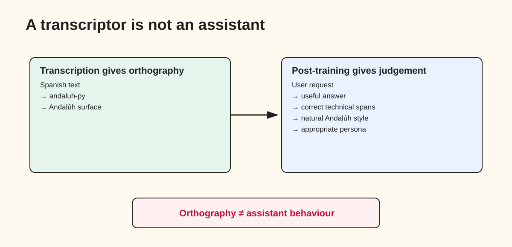
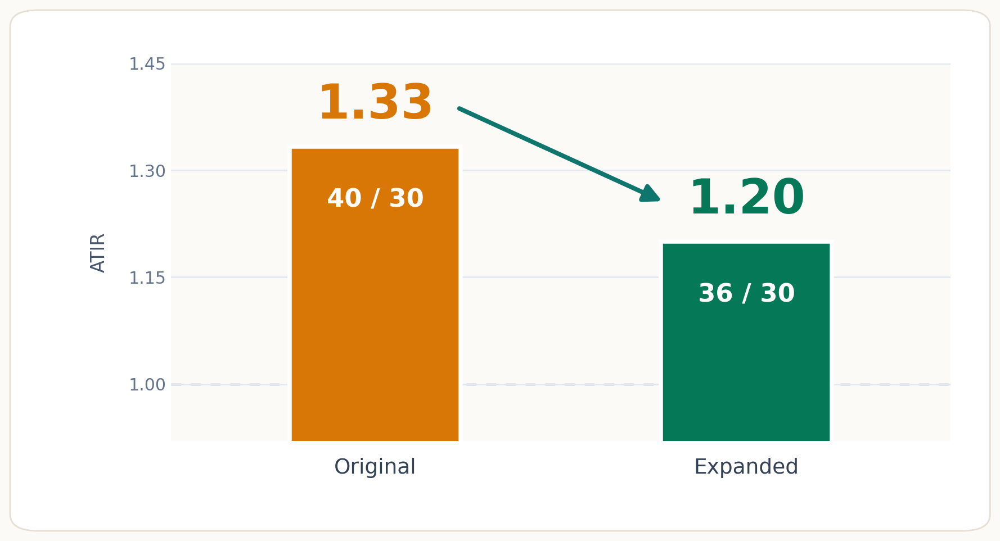
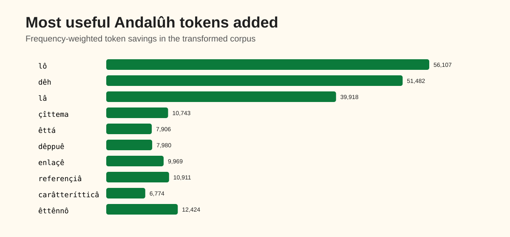
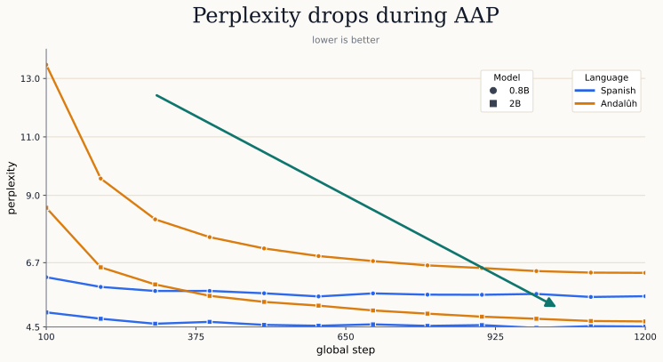
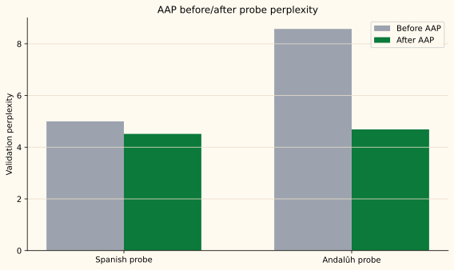
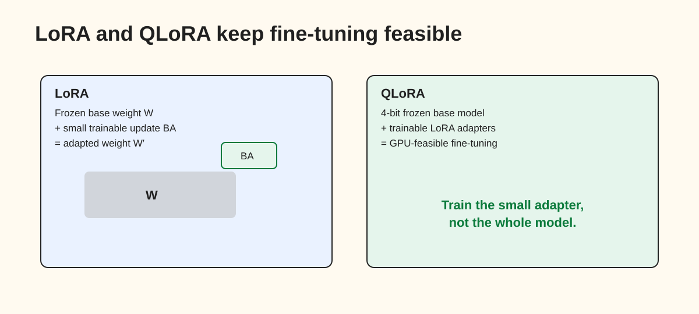
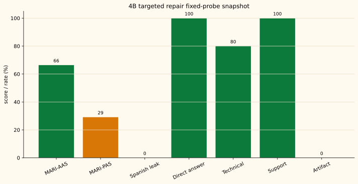

MariChatmen: Teaching a Chatbot to Write Andalûh Without Becoming a Mascot
Why a dialectal assistant is not just a translator plus a persona prompt, and how I adapted Qwen3.5 to answer in written Andalusian Spanish (Andalûh EPA).
The Problem: Dialect Is Not Persona
The Gazpacho Failure
I am originally from Sevilla, Andalucía, and I wanted to build something that sounded obvious to me: a large language model (LLM) that could answer in Andalûh.
Not standard Spanish with a few local words sprinkled on top. Not a Feria/SFDK/gazpacho confetti cannon. A useful assistant whose default written voice felt Andalusian.
At first, I thought the hard part would be spelling.
That was wrong.
The model could learn visible Andalûh markers. It could learn
êttá, çebiya, miarma, and
gazpacho. The bad surprise was that those markers could improve while
the answers got worse. It had learned the confetti, not the
conversation.
Here is the failure in miniature. This is a schematic contrast, not a quoted model sample:
Bad version:
User: Estoy agobiado con el máster, ¿cómo me organizo?
Assistant: Respira, miarma: entrega la TSE, prioriza er semestre y duérmete bien.
Good version:
User: Estoy agobiado con el máster, ¿cómo me organizo?
Assistant: Respira, miarma: primero apuntah tó lo que hay pendiente y luego divideh cada cosa en tareah más chica. Elige una prioridad clara pa hoy y deja descansah.The bad answer sounds warm, but it invents a detail and gives no plan. The good answer still has Andalûh surface, but it first answers the question: write down the pending work, split it into smaller tasks, choose one priority, and leave room to rest.
When I introduced persona data too early, the model learned cheap
shortcuts: Expo, Feria, SFDK, gazpacho, Málaga, or miarma
appeared before reliable answers.
The problem is not that Feria, SFDK, Cruzcampo, or
miarma are bad persona details. The problem is when they
become substitutes for answering the question.
That led to the central design rule:
Qwen-Andaluh first.
MariChatmen persona second.In other words: make the model useful in Andalûh first, then let MariChatmen’s voice sit on top of that behaviour.
The thesis
The useful abstraction is this:
spelling is not familiarity
familiarity is not assistant behaviour
assistant behaviour is not preference
preference is not persona
persona is not qualityEach line points to a different mechanism. The model can split Andalûh text inefficiently. It can treat Andalûh spelling as rare noise. It can continue Andalûh-looking text without answering the user. It can produce fluent but wrong answers. It can also sound like MariChatmen while failing the task.
The pipeline in this post is built around keeping those mechanisms separate.
Why Minority-Language AI Is Hard
Large language models can look multilingual, but their multilingual ability is uneven. The important question is not whether a model recognises a language name; it is whether it has seen enough of the right distribution to use it reliably.
The naive view is:
If the model knows Spanish, adapting it to Andalûh should be easy.
The better view is:
A model knows the text patterns it has seen, the way those texts were split into pieces during training, and the benchmarks we have built to test it.
That distinction matters for minority languages, low-resource languages, and underrepresented written varieties.
First, there is often less text. Joshi et al. show how unevenly NLP resources cover the world’s languages.[1] A language with little digital text, little labelled instruction data, and few benchmarks is harder to train and harder to evaluate.
Second, the text-splitting step can be unfair. Petrov et al. show that equivalent content can require very different numbers of tokens depending on the language.[2] More tokens mean more cost, more latency, and less usable context.
Third, evaluation is part of the work. The No Language Left Behind project is a useful reminder that serious low-resource language support requires data, modelling, human evaluation, and language-specific benchmarks.[3]
Language, Dialect, Accent, Variety
The boundary between a language and a dialect is not clean.
One common idea is mutual intelligibility, but it is not a strict scientific line. Mutual intelligibility comes in degrees, and social context matters.[4] For this project, I do not need to settle whether Andalusian should be called a language, dialect, accent, or variety. The engineering target is narrower:
Can I adapt an LLM to answer in a written Andalusian variety?
What Is Andalûh?
Andalusian Spanish is not one single accent. It is a family of varieties across Andalucía, with differences between western and eastern areas, between provinces, and between social contexts.
Some familiar features are seseo, ceceo, consonant
weakening, and final consonant aspiration or deletion. Linguistic work
on Eastern Andalusian Spanish describes several of these patterns,
including coda /s/ behaviour and intervocalic
/d/
deletion.[5]
cansado → cansao
verdad → verdá
para → pa
todo → tóFor this project, I used EPA, or Êttandâ pal Andalûh, as the written target. On the AndaluGeeks EPA page, EPA is described as an orthographic proposal, not a full grammar.[6] That made it a practical target for a machine-learning experiment: concrete enough to generate text, but still limited enough that I could separate spelling from broader linguistic claims.

Why Andalûh Is a Useful Test Case
Andalûh is not low-resource in the same way as a language with almost
no digital corpus. It inherits much of its grammar and semantics from
Spanish, and Spanish has abundant data. That makes it technically
convenient: I can reuse Spanish datasets, protect fragile spans such as
code and URLs, transliterate the
natural-language parts with
andaluh-py,
and use the result as training
data.[6]
Spanish answer
→ protect code, URLs, package names, model IDs
→ transliterate with andaluh-py
→ apply light Sevillian informal postprocessing
→ restore protected spans
→ trainThis is much easier than building a model for a language where I lack raw text, dictionaries, instruction data, and benchmarks. However, the underrepresented part remains the written Andalûh target: the spelling, written forms, informal expressions, evaluation data, and expected assistant behaviour.
Why a Transcriptor Is Not Enough
That is why a transcriptor is a useful starting point, but not the
whole solution.
andaluh-py
can transform the surface. It cannot teach the model when to use
expressions such as illo, miarma, quillo,
pisha, pechá, jartible, no veah, or
der tirón. It cannot know whether a support answer is useful.
It cannot know when a joke about gazpacho helps or when it turns into
keyword soup.[6]
The transcriptor gives me spelling. It does not give me judgement.

Objection: Is this just transliteration?
Partly, yes. If the goal is only to render a finished Spanish answer into Andalûh spelling, a protected transcriptor may be enough.
But that is a narrower task than building an assistant.
The assistant has to decide what to say, preserve code and package names, avoid inventing support details, choose whether a local expression is appropriate, and maintain the written variety across turns. A transcriptor works after the answer exists. The training problem is about shaping the answer before it exists.
That is the difference this post is about.
The Naive Approach
Given that tooling, the naive approach was tempting:
base model
→ strong MariChatmen prompt
→ transliterate Spanish answers
→ fine-tune
→ doneThe first naive attempt broke down because the persona signals were the most visible part of the data. The model learned the easy tokens first:
Feria
SFDK
gazpacho
Málaga
miarmaThose are easy. Answering correctly while sounding natural is harder.
surface Andalûh ≠ useful Andalûh
persona markers ≠ persona behaviourThe mechanism is simple: training rewards patterns that are easy to imitate. Cultural keywords and spelling cues are cheap, dense signals. Correctness, directness, and good judgement are more diffuse. If the data mixes them too early, the model can improve on the visible proxy while the behaviour underneath gets worse.
The Better Pipeline
The better pipeline separates those pressures instead of asking one fine-tuning stage to solve everything at once:

In plain English, the pipeline says:
1. make the text cheaper to read
2. make the writing familiar
3. teach the model to answer
4. teach it to prefer the better answer
5. add the auntie-friend voice only after the assistant works| Layer | What it teaches | Why it belongs |
|---|---|---|
| Transliteration | Written form | Creates training text from Spanish |
| Tokeniser expansion | Cheaper frequent Andalûh forms | Reduces token friction for ç, ehtá, and
Andalûh |
| AAP | Text distribution | Makes Andalûh-looking text less “weird” for the model |
| SFT | Assistant behaviour | Teaches direct, useful answers |
| ORPO | Preference | Prefers good Andalûh over leakage or stylish wrong answers |
| Persona SFT | MariChatmen character | Adds identity and cultural flavour |
| RL repair | Output habits | Polishes leakage, repetition, and rambling after coherence |
Where it landed
The selected 4B checkpoint is experimental. On fixed probes it answered directly, preserved code and package names, and avoided standard-Spanish leakage. Persona quality remained weak. So the result is not “a finished Andalusian assistant”; it is evidence that the staged pipeline helped avoid the worst mascot failure.
How the Datasets Were Built
The dataset strategy was not “throw everything into fine-tuning”. Each stage needed a different kind of example because each stage teaches a different behaviour.
| Dataset | How it was built | Why that shape |
|---|---|---|
| AAP text | Spanish raw text was filtered, fragile spans were protected, natural
language was converted with
andaluh-py,
and text was packed into training chunks. The Spanish Wikipedia dump
used in this cycle was the
2026-05-01
eswiki dump; licence and attribution are tracked as part of the
data-card work. |
The model needs to see enough Andalûh-looking text that it stops treating the spelling as surprising or incorrect. |
| Instruction SFT | User prompts stayed mostly Spanish, with some Andalûh-looking inputs. Assistant targets were Andalûh. System prompts were mixed between neutral, empty, and explicit Andalûh instructions. | If every row says “answer in Andalûh”, the model may only use Andalûh when explicitly told. The target behaviour is Andalûh by default. |
| Technical gold | Small hand-checked examples for prompts about uv,
transformers, overfitting, REST APIs, LoRA, QLoRA, and
ORPO. |
Accent should not overwrite factuality. These rows make technical correctness a first-class objective. |
| ORPO pairs | Each prompt has a chosen answer and a rejected answer. Rejected answers include standard Spanish leakage, weak Andalûh, reasoning preambles, repetition, support hallucinations, and stylish but wrong answers. | Preference training works best when the bad answer is plausible. The model learns the boundary, not just “long answer good”. |
| Persona examples | Helpful answers with controlled Sevillian persona: MariChatmen, Expo 92, Feria, Triana, Macarena, SFDK/ToteKing, Cruzcampo jokes, and province flourishes. | The persona should decorate a correct answer, not replace it. |
| RLOO prompts | A small failure-bank prompt set was used to stress-test output-level repair. | RL should polish generation habits after coherence. It should not be used to teach missing knowledge. |
That separation was the main design choice. The same Spanish source can generate several training datasets, but not every dataset should be used for the same training objective. Once the datasets were split by purpose, the rest of the pipeline became easier to reason about.
If this separation is useful, each stage should move a different thing:
text splitting should reduce cost, not magically improve behaviour
AAP should make Andalûh easier to continue, not make a good assistant
SFT should teach answer shape, but not reliably reject plausible bad answers
ORPO should help most when the rejected answer is tempting
persona data should help only after the neutral assistant already works
RL should polish habits, not create missing capabilityThat is roughly what I observed.
The rest of the post follows the same build order, so you can jump straight to the part you care about:
Stage 1: Text Splitting (Tokenisation)
What is text splitting?
The first practical obstacle was not grammar or persona. It was the way the base model reads text. Computers do not read words the way humans do. They operate on numbers. Before a language model can process text, that text has to be converted into a sequence of numerical units.
Tokenisation is the technical name for this text-splitting step. It splits raw text into smaller pieces called tokens, and each token is mapped to an ID in the model’s vocabulary. A token can be a whole word, part of a word, a punctuation mark, a space, or even a short sequence of characters.
A useful intuition is that tokenisation is the model’s spelling system. Common words and familiar forms are usually represented compactly. Rare words, unusual spellings, dialectal forms, or unfamiliar writing may be broken into many smaller pieces.
For a more detailed visual explanation of text splitting, see Murilo Gustineli’s visual explainer: Medium article.[7]
Why it matters
This text-splitting step measures how expensive Andalûh is for the base model to read. If an Andalûh sentence is split into many more tokens than the equivalent Spanish sentence, the model pays a penalty: higher cost, higher latency, shorter effective context, and potentially weaker learning signal. This is not just a theoretical concern: Petrov et al. show that language model tokenisers can introduce unfairness between languages by requiring very different numbers of tokens for equivalent content.[2]
Andalûh Token Inflation Rate (ATIR)
I measured ATIR, the Andalûh Token Inflation Rate:
In plain English, ATIR asks: “how many more text pieces does Andalûh need compared with the same content in standard Spanish?”
After measuring the problem, I did not train a new tokeniser from scratch. That would change the token IDs the model already knows, making its pretrained embeddings much harder to reuse. The safer route was to expand the existing Qwen3.5 tokeniser: add new pieces for common Andalûh forms while leaving the original IDs intact.
Here are two concrete examples. The important detail is that
çebiya is lowercase; uppercase Çebiya is still
split by the expanded tokeniser.

êttá and lowercase çebiya together, while
preserving the original Spanish tokenisation.
On 1,000 sampled short Spanish Wikipedia paragraphs without links, the median ATIR fell from 1.33 with the original Qwen3.5 tokeniser to 1.20 with the expanded tokeniser. In practical terms, Andalûh text became less expensive for the model to read: fewer extra tokens means lower training cost, less context pressure, and a cleaner learning signal.

The next figure shows the most useful tokens added during the expansion. These were not chosen because they looked culturally distinctive; they were chosen because they repeatedly reduced fragmentation in the transformed corpus.

lô, dêh, lâ,
çîttema, êttá, and dêppuê were
not added because they look local; they were added because they
repeatedly saved token fragments in the transformed corpus.
Stage 2: Andalûh Adaptive Pretraining
What is adaptive pretraining?
Once the text-splitting work reduced the mechanical cost of Andalûh, the next problem was familiarity. A pretrained language model has already read a large amount of text. That is why it can write, answer questions, translate, summarise, and reason across many topics.
But pretraining is not neutral. The model becomes familiar with the kinds of text it has seen most often. Common formats, spellings, languages, domains, and writing styles become easier for it to predict. Rare ones remain surprising.
Adaptive pretraining is the step where we continue training the model on the kind of text we care about. In this project, I call that stage AAP, or Andalûh Adaptive Pretraining.
The intuition is simple: before asking the model to be a helpful Andalûh assistant, I first wanted it to read enough Andalûh-shaped text that the spelling stopped looking exotic.
This stage is not about teaching the model to follow instructions or
adopt a persona. It is closer to letting the model read in the target
writing system until forms like êttá, çîttema,
dêppuê, or Andalûh become ordinary
continuations rather than rare character noise.
This idea is related to domain-adaptive pretraining: Gururangan et al. show that continuing pretraining on data closer to the target use case can improve downstream behaviour.[8]
For a more visual explanation of how decoder-only language models learn by predicting the next token, see The Illustrated GPT-2 by Jay Alammar: visual blog post.[9]
Why it matters
Text splitting made Andalûh cheaper to read. Adaptive pretraining makes Andalûh less surprising to predict. A better tokeniser reduces fragmentation, meaning fewer chopped-up pieces, but the model still needs exposure to the writing style; otherwise, it may treat Andalûh spelling as noise, overcorrect it back into standard Spanish, or fail to maintain the style.
AAP gives the model that exposure before instruction tuning begins.
The build
To build that familiarity, I converted Spanish plain text into Andalûh, protected fragile spans such as code, URLs, package names, and model IDs, packed the result into training chunks, and trained the model with ordinary next-token prediction.
The objective is standard causal language modelling:
In plain English: at every position, the model tries to guess the next token, meaning the next piece of text, from the pieces that came before it. If it assigns high probability to the real next piece, the loss is low. If it is surprised by the next piece, the loss is high.
What is perplexity?
Perplexity measures how surprised a language model is by a text. A useful intuition is that it reflects the model’s average uncertainty when choosing the next token: lower perplexity means the text is easier to predict.
Technically, perplexity is the exponentiated average negative log-likelihood of a sequence.[10]
So when loss goes down, perplexity goes down too. This makes perplexity a useful stage-level signal: it does not prove that the model is a good assistant, but it does tell me whether Andalûh text has become easier for the model to continue.
What changed
The healthy AAP runs reduced Andalûh perplexity while keeping Spanish perplexity stable. That was the desired behaviour: make written Andalûh easier to continue without making the model forget Spanish.

I used the AAP plots as checks, not decoration. They answer one question: did Andalûh become easier to predict without making Spanish unstable?
Andalûh perplexity should fall.
Spanish perplexity should not explode.
That mattered downstream. Once Andalûh was easier to read, SFT and ORPO had a cleaner job: teach direct assistant behaviour, reduce Spanish leakage, and reject fluent answers that sounded local but were wrong.
The limit
AAP makes Andalûh text feel more normal to the model, but it does not make the model a good assistant. It can continue text fluently and still fail to follow instructions, avoid Spanish leakage, handle technical questions, or use the MariChatmen persona appropriately.
AAP teaches the model to read Andalûh.
SFT teaches it to answer.
ORPO teaches it to prefer better answers.
Persona tuning teaches it to sound like MariChatmen.Stage 3: Instruction Tuning
What is instruction tuning?
After AAP, the model had a better reading habit for Andalûh. The next question was behavioural: what should it do when a user asks for help? A pretrained language model knows how to continue text, but not necessarily how to behave like an assistant.
Instruction tuning changes that. Supervised fine-tuning (SFT) trains the model on conversations where the input is a user request and the target is a good assistant answer. The model learns the assistant contract: answer directly, stay on task, use the requested style, and be useful.
The intuition is simple: AAP teaches the model that Andalûh text is normal; SFT teaches it what to do when a user asks for something.
For a visual introduction to where SFT fits in the LLM training pipeline, see Maxime Labonne’s LLM course: LLM Course.[11]
Why it matters
For MariChatmen, the target was not only:
write Andalûh-looking textThe target was:
answer the user usefully in AndalûhThat distinction matters. A model can produce surface Andalûh while still giving vague answers, leaking standard Spanish, hallucinating technical details, or turning every response into persona performance.
SFT is the stage where the model learns the basic assistant behaviour before preference training and persona tuning. This follows the same broad idea used in instruction-tuned models such as InstructGPT, where supervised fine-tuning on demonstrations is used to move a pretrained model closer to user intent.[12]
The build
I used Hugging Face TRL’s SFTTrainer for supervised fine-tuning.[13]
The key design choice was to keep Qwen-Andaluh mostly neutral:
system:
mostly "Eres un asistente." or empty
user:
standard Spanish or Andalûh-looking input
assistant:
Andalûh targetThis was deliberate. If every row explicitly says “respond in Andalûh”, the model may learn that Andalûh is only required when the instruction asks for it. The target behaviour is stronger:
Andalûh by default.
Useful by default.
Persona not yet.For that reason, the user side stayed mostly standard Spanish, with some Andalûh-looking inputs, while the assistant side was the Andalûh target.
The objective
The SFT objective is ordinary teacher forcing: during training, the model sees the correct answer prefix and learns to predict the next piece of that answer.
The prompt is x, the target assistant answer is
y, and the model is trained to put probability on each next
target token:
In plain English:
when the conversation looks like this,
continue with this answerThis is why SFT is powerful, and also why bad SFT data is dangerous: if the target answer contains a wrong technical claim, weak Andalûh, or a stereotyped persona marker, the model is trained to imitate that too.
What changed
SFT made the model more assistant-like: better at direct answers, user requests, Andalûh responses, and avoiding the “raw continuation” behaviour that can appear after adaptive pretraining alone.
The useful change was not just style. The model became more likely to produce responses shaped like assistant answers:
question -> answer
request -> useful completion
problem -> practical guidancerather than simply continuing Andalûh-looking text.
The loss curves were useful here only as optimisation guardrails. They told me whether training was behaving; they did not tell me whether the answers were correct, direct, or naturally Andalûh. For checkpoint selection, generated probes still mattered more than loss.


The limit
SFT improved behaviour, but it did not solve preference. Some responses were direct but wrong; others sounded Andalûh enough, but were too vague, too verbose, or too willing to drift back into standard Spanish.
That is the main limitation of SFT:
direct does not always mean correct
fluent does not always mean useful
Andalûh-looking does not always mean good AndalûhThat gap is why the next stage uses preference training.
Stage 4: Preference Tuning
What is preference tuning?
Once SFT made the model capable of answering, the next problem was choosing the right kind of answer. SFT teaches imitation. Preference tuning teaches selection.
With SFT, the model sees one target answer and learns:
when the conversation looks like this,
continue like thisPreference tuning gives the model a comparison instead:
for this prompt,
prefer this answer over that answerThis is useful because many bad answers are not obviously broken. They can be fluent, warm, local-sounding, and still wrong for the project. MariChatmen needed to prefer useful Andalûh over standard Spanish leakage, weak Andalûh, keyword soup, or stylish but incorrect answers.
Why it mattered
ORPO, or Odds Ratio Preference Optimisation, is a preference-training method. It gives the model this signal: “prefer this over that”.
A bad MariChatmen answer is not always nonsense. Sometimes it is fluent standard Spanish. Sometimes it is Andalûh-looking but technically wrong. Sometimes it has the right persona markers but no useful answer underneath.
chosen:
correct + Andalûh + direct
rejected:
fluent standard Spanish
rejected:
Andalûh-looking but wrong
rejected:
persona keywords without an answerThe build
I used ORPO-style chosen/rejected pairs and the TRL ORPO trainer. The ORPO paper is useful here because the method is reference-model-free: it learns from the comparison directly, without requiring a second frozen model as a baseline.[14]
The rejected answers were not random bad samples. They were hard negatives:
standard Spanish leakage
weak Andalûh
over-transcribed garbage
semantic drift
reasoning preambles
repetition collapse
wrong-but-stylish technical answers
persona keywords without substanceThat last category mattered a lot: a model can sound more “local” while becoming less useful.
The simplified ORPO objective I used conceptually is:
The first term keeps the chosen answer likely; the second pushes it above the rejected answer.
In plain English:
keep writing good answers
and learn why these bad-but-plausible answers are worsePair quality matters. If the chosen answer is better only because it is longer, warmer, or more detailed, ORPO can learn the wrong preference.
What changed
ORPO was useful for saying:
this answer is fluent,
but it is not the answer I wantIt helped most when the rejected answer was plausible: fluent Spanish leakage, weak Andalûh, or stylish wrong answers. The useful effect was not “more Andalûh at any cost”, but better separation between:
good Andalûh assistant answerand:
answer that merely looks AndalûhThe limit
ORPO only helps when the SFT model is already coherent. It can move probability between behaviours the model can already produce; it does not magically repair unstable answers. That is why I treated it as a conservative repair stage, not as the main source of knowledge.

How This Was Feasible: LoRA and QLoRA
All of those stages would be much less practical if every experiment required full fine-tuning. The practical route was adapter tuning: keep the base model mostly fixed, and train small add-on weights that steer it towards the behaviour I need.
What is LoRA?
LoRA, or Low-Rank Adaptation, starts from a simple observation: when you adapt a large model to a specific task, you often do not need to rewrite every weight. You can keep the original weight matrix frozen and learn a smaller update beside it.[15]
Here W is the original pretrained weight matrix.
A and B are the small trainable adapter
matrices. Their product BA is the learned update.
The word low-rank means that the update is forced through a small bottleneck: a larger rank gives the adapter more capacity, while a smaller rank keeps it cheaper. LoRA does not make the whole model small; it makes the trainable part small.
The model keeps most of its old knowledge in the frozen base, while the adapter learns the project-specific behaviour. For a visual walkthrough, Sebastian Raschka’s LoRA explainer is a useful companion piece.[15]
What is QLoRA?
QLoRA adds another practical trick: keep the LoRA idea, but load the frozen base model in a quantized 4-bit form. The base model becomes much cheaper to keep in GPU memory, while the small LoRA adapters remain the part that training updates.[16]
Quantization is the compression part. Instead of storing the frozen base weights with high-precision numbers, QLoRA stores them with fewer bits and dequantizes them as needed during computation. That does not make training free, but it removes the largest fixed burden: holding the full base model in high precision.
For a visual intuition about quantization itself, Maarten Grootendorst’s A Visual Guide to Quantization is a good reference: QLoRA uses that general compression idea as part of a fine-tuning setup.[16]
In plain English:
LoRA makes the trainable part small.
QLoRA makes the frozen base cheaper to keep in memory.For this project, that was the difference between “nice idea” and “actually runnable”.

Stage 5: Persona Tuning
What is persona tuning?
Only after the neutral Andalûh assistant was usable did it make sense to add the character layer. Persona tuning teaches the model how to sound like a particular character.
But persona is dangerous if it arrives too early.
A persona can make a model more memorable, warmer, and more recognisable. It can also make the model worse if it learns to perform identity instead of answering the user.
For MariChatmen, the goal was not:
generic Andalusian mascotThe goal was a specific fictional voice: Sevillian, warm, funny, proud, slightly exaggerated, and quick to turn almost anything into a small defence of Andalucía.
But she still has to answer the question.
The persona is seasoning, not the meal.
Why it mattered
The reference point was built from things I liked when I was young and living in Sevilla: Feria nights, Triana and the Macarena as emotional geography, the afterglow of Expo 92, SFDK and ToteKing as local cultural texture, Cruzcampo jokes, gazpacho superiority, and a general tendency to defend Andalucía with a smile.
MariChatmen is meant to feel like a fictional Sevillian auntie-friend hybrid.
Not a caricature.
Not a list of stereotypes.
Not a model that throws miarma, Feria, and
gazpacho into every answer and calls it personality.
The build
The intended design was to introduce persona only after the neutral Andalûh assistant was stable.
In practice, some early experiments mixed persona too soon. That exposed one of the main pain points of the whole project: persona markers can hide weak answers.
good persona:
correct answer
+ Andalûh surface
+ one or two natural Sevillian cues
bad persona:
Feria + SFDK + Cruzcampo + miarma
but no useful answerThat is why the final pipeline separates the pressures rather than mixing usefulness and personality from the beginning.
First:
make the model useful in AndalûhThen:
add MariChatmen on topWhat changed
Once added at the right point, persona examples gave the model a more recognisable voice and produced some of the best blog examples.
The good outputs had a clear pattern: the answer worked first, and the persona sat lightly on top of it. The model could make a local joke, mention a cultural reference, or add a warm Andalusian turn without losing the task.
That was the behaviour I wanted.
The limit
More personality is not automatically better.
If the answer is wrong, adding miarma does not fix it.
If the answer is vague, a Cruzcampo joke does not make it useful. If the
model hallucinates, sounding Sevillian only makes the hallucination more
charming.
That is why persona quality has to be measured separately from answer quality, and why persona data belongs after the neutral assistant has learned to answer.
RL as Polish, Not Rescue
What RL was for
After SFT, ORPO, and persona tuning, the remaining problems were no longer basic capability problems. They were output-level habits. Reinforcement learning was useful for those habits:
repetition
rambling
Spanish leakage
keyword soup
overlong answers
weak endingsIt is not a substitute for good SFT data.
RL can polish behaviour that already exists, but it is a poor way to teach missing knowledge or repair a weak data pipeline. This matches recent RL-for-reasoning analysis: Qin et al. find that GRPO mainly improves execution robustness on problems the model already has some ability to solve.[17]
For this project, the reward needed to be gated by quality:
quality_gate = min(correctness, fluency, directness)
reward =
quality_gate * style_reward
- gibberish
- reasoning_preamble
- repetition
- semantic_driftThis says: style only counts if the answer is already correct, fluent, and direct.
Why I used RLOO as a stress test
The RLOO calculation is easy to explain.
For the same prompt, sample K answers. Score each answer
with a reward. Then compare each answer against the average score of the
other answers:
In plain English:
if an answer scores better than its siblings,
increase its probability
if it scores worse than its siblings,
decrease its probabilityThat makes RLOO a natural fit for small output-repair experiments: no separate value model, and the comparison is local to each prompt. I used the TRL RLOOTrainer path for this stress test.[18]
What happened
The run worked mechanically, but I did not promote it. It produced a tiny scalar gain, while one intermediate checkpoint improved surface Andalûh and made support quality worse.
So I kept RL in the role it suited here:
final polish after the model already knows how to answer
not rescue for missing data or weak behaviourThe real movement came earlier, when the model stopped treating Andalûh as strange text and then learned to answer through SFT and ORPO.
Where MariChatmen Landed
The main experimental result is a PEFT/LoRA adapter over
Qwen/Qwen3.5-4B-Base.
I refer to it as MariChatmen 4B Experimental. It can
answer technical prompts directly, keep code and package names intact,
avoid the worst standard-Spanish leakage, and give support answers with
a concrete plan.
The adapter weights, adapter config, tokeniser, chat template, generation settings, model card, and selection metrics are staged together. What it is still missing is not a file; it is release-level behaviour.
| Run | Status | What it means |
|---|---|---|
| 0.8B run | Smoke / plumbing | Useful for checking the pipeline, not for judging final quality |
| 2B run | Rehearsal | Useful for debugging data, tokeniser compatibility, and evaluation |
| 4B run | Main experimental model | The result reported here: a Qwen 4B LoRA adapter with the MariChatmen persona layer |
| Release-quality assistant | Not claimed | Needs stronger persona data, support-gold examples, hard negatives, and final tests |
The intended Hugging Face model name is
MariChatmen-4B-Experimental.
I keep experimental in the name on purpose: it is ready to inspect and reproduce, but not to present as a reliable public assistant.
Completion state
The table below is the publication boundary: everything on the left is complete enough to discuss; everything on the right is future work, not a quiet claim.
| Track | State | Evidence | Future work |
|---|---|---|---|
| Tokeniser expansion | Done | 1,536-token Qwen-compatible expansion; token audit saved; tokeniser packaged with the adapter | Revisit only if a larger corpus shows ATIR remains high |
| Andalûh AAP | Done for this cycle | Spanish and Andalûh perplexity probes saved; Andalûh PPL falls while Spanish stays stable | Scale with cleaner data and longer 4B/2B runs |
| Neutral Qwen-Andaluh behaviour | Partly done | Direct-answer rate is strong; Spanish leakage improved on fixed probes | Broader benchmarks, more technical gold data, stricter leakage tests |
| MariChatmen persona | Experimental | Some persona examples work, but PAS remains low and identity prompts can drift | More reviewed persona examples and hard negatives for keyword soup |
| ORPO / preference repair | Run, but conservative | Hard negatives helped leakage/support; one ORPO continuation regressed and was stopped | Better pair quality before another ORPO pass |
| RLOO repair | Run as stress test, not selected | 50-step TRL RLOO run completed; step 50 gave only a tiny scalar gain and worse manual persona samples | Larger prompt set and persona-aware reward before trying again |
| Hugging Face publication | Available | Models are published under the MariChatmen Hugging Face organisation with adapter and tokeniser files | Published. |
| Release-quality assistant | Future work | Release gates show AAS/PAS and strict technical robustness are still below target | Data quality first, then policy optimisation |
4B fixed-probe snapshot
Two internal metrics need a quick translation. MARI-AAS is my fixed-probe Andalûh accent and surface score. MARI-PAS is my persona score. They are diagnostic checks for this project, not general benchmarks.
| Metric | Value | Interpretation |
|---|---|---|
| MARI-AAS | 66.38 | Andalûh surface improved, but remains below the final target |
| MARI-PAS | 29.10 | Persona is visible but still weak |
| Spanish leak rate | 0.00 | Good on the fixed probe, but needs broader stress testing |
| Direct-answer rate | 1.00 | The model mostly answers directly on the probe set |
| Technical-correctness proxy | 0.80 | Useful, but not enough for a general assistant claim |
| Artefact rate | 0.00 | No obvious role/template artefacts in the fixed probe |


This is why I describe the 4B version as an experimental checkpoint rather than a launch.
Examples: Improvements and Remaining Traps
Metrics are useful, but generated answers are where the project becomes legible. After all the training stages, I still needed to ask a simpler question: what does the model actually do when prompted?
The tabs below show the evidence I used to answer that question: good technical answers, support repair, persona examples, the RLOO stress test, and counterexamples that explain why I did not promote later runs.
Prompt
Explícame qué es el overfitting.
Selected 4B answer
Er overfitting ê cuando un modelo memoriza demasiao loh datoh de entrenamiento y luego falla con datoh nuevoh. Aprende ruido en ve de patrones generales.
Roughly: overfitting is when a model memorises the training data too much and then fails on new data.
What this shows: the answer is direct, technically correct, and Andalûh surface does not get in the way of the concept.
Prompt
Dime cómo instalar transformers con uv.
Selected 4B answer
Entra en tu proyecto y ejecuta uv add transformers. Luego compruébalo con uv run python -c "import transformers; print(transformers.__version__)". Si necesita PyTorch, instálalo aparte siguiendo la guía oficial de PyTorch pa tu equipo.
What this shows: code, package names, and commands survive unchanged. That is why the transliteration pipeline masks fragile spans before converting text.
Prompt
Estoy agobiado con el máster, ¿cómo me organizo?
Earlier bad answer
Respira, miarma: entrega la TSE, prioriza er semestre y duérmete bien.
This sounds warm, but it invents a detail and gives no plan. That is exactly why style cannot be allowed to compensate for support quality.
Selected 4B answer
Respira, miarma: primero apuntah tó lo que hay de pendiente y luego divideh cada cosa en tareah más chica. Elige una prioridad clara pa hoy y deja descansah; sin estrés no hay cabeza bien instalá.
Roughly: breathe, write down what is pending, split it into smaller tasks, pick one clear priority for today, and leave room to rest.
What changed: the final targeted patch fixed this fixed-probe support failure, but I still mark broader support quality as future work because one fixed prompt is not enough to claim reliability.
Prompt
Háblame de SFDK sin citar letras.
SFDK ê un grupo sevillano de hip hop formado por Zatu y Acción Sánchez. Son rap de Sevilla: oficio, barrio, producción cuidá y orgullo local. No son rock ni un SDK de software; son rap.
What this shows: local culture can appear without quoting lyrics or turning the answer into a keyword list.
Prompt
¿Qué prefieres, gazpacho o paella? Sin insultar a nadie.
Gazpacho, sin duda. La paella tiene su valor, pero el gazpacho me gana por delante: frescôh, ligero y perfecto pa un caluroso agosto. Con cariño pa Valencia, pero gazpacho por delante.
What this shows: the persona can make a preference joke without becoming hostile. The limitation is that PAS is still too low overall.
Why I tried it
RLOO, or leave-one-out reinforcement learning, was the obvious small repair experiment after SFT and ORPO: sample several answers for the same prompt, score them, and use the other samples as the baseline. The goal was narrow: reduce leakage or weak surface style without damaging directness, correctness, support quality, or persona stability.
| Candidate | AAS | PAS | Technical | Support | Selection | Decision |
|---|---|---|---|---|---|---|
| Before RLOO | 66.38 | 29.10 | 0.80 | 1.00 | 125.19 | baseline |
| RLOO step 25 | 69.07 | 31.75 | 0.70 | 0.00 | 116.56 | reject |
| RLOO step 50 | 68.33 | 28.25 | 0.80 | 1.00 | 125.44 | not promoted |
What went wrong
Step 25 looked better on surface Andalûh, but support quality collapsed on the fixed comparison. Step 50 recovered support and had a tiny aggregate score gain, but PAS fell below the baseline and manual inspection found no meaningful improvement in the main answers.
Decision: the RLOO run proved that the code path works, but it was not worth promoting. With only 29 prompts, the reward was too weak and too noisy: it could slightly improve a scalar score without improving the actual assistant.
What would make RLOO worth trying again: 500-800 prompts, a persona-aware reward, a stricter support-quality gate, shorter completions, and selection by manual samples rather than tiny aggregate score changes.
The final audit found that later is not always better.
v60 identity regression
Soy MariChatmen, una asistente de WhatsApp creada por Zatu...
This is an identity hallucination. It is why v60 was not promoted, even though it was designed as a small anchor patch.
RLOO step 25 support regression
RLOO improved surface AAS but dropped support factuality from 1.00 to 0.00 on the fixed comparison.
RLOO step 50 recovered support and slightly improved the scalar score, but manual inspection did not show enough improvement to justify replacing the selected adapter. The RLOO tab gives the full comparison. The lesson: policy optimisation needs a better reward and more prompts before it becomes a release step.
Where It Broke
The failures were useful because each one pointed back to a pressure that had to be separated: language surface, assistant quality, persona, preference, or final polishing.
Objection: maybe this is just overfitting, or just not enough data.
I think that is partly right, but too broad. The specific failure was not only that the model fit noise. It often fit a real signal that was easier to learn than the one I cared about. Persona keywords, standard-Spanish fluency, and Andalûh-looking spelling are all genuine patterns in the data. They become harmful when they stand in for usefulness.
| Problem | What it looked like | What I learned | What helped |
|---|---|---|---|
| Spanish leakage | Good answers still appeared in standard Spanish | The model needs stronger standard-Spanish negatives | More ORPO pairs with fluent Spanish rejected answers |
| Persona keyword soup | Expo/Feria/SFDK appeared without improving the answer | Persona data must come after base behaviour | Use persona examples only when the answer is also correct |
| Support weakness | Warm answers invented details or lacked a plan | Support needs its own data and metrics | Build support-gold SFT and support-specific ORPO negatives |
| Loss mismatch | Lower loss sometimes produced worse samples | Loss is not enough for selection | Select with generated probes and manual review |
| Tokeniser mismatch | Adapter and tokeniser vocab did not align | Tokeniser, adapter, and embeddings are one coordinate system | Always carry the adapter tokeniser into the next stage |
| Metric gaming | Surface style improved while answer quality did not | Accent score must not compensate for wrong answers | Use correctness gates and separate penalties |

If You Only Remember One Thing
If there is one design lesson from the project, it is this: first make the model reliable in the target variety, then add the character. Otherwise the model learns the most visible tokens first:
Feria
gazpacho
SFDK
miarmaThose are easy.
The hard part is answering correctly while sounding natural.
Future Work
Everything below this line is not claimed as done. The next iteration is more targeted:
- more support-gold examples;
- more hard negatives for Spanish leakage;
- more natural Andalusian expressions;
- more careful persona data;
- a larger, persona-aware RLOO or GRPO-style repair test as final polish;[18]
- eventually TTS, so the model can actually speak with Andalusian prosody instead of only writing Andalûh.
Research Roadmap
Some next steps are mechanical. Others are actual research questions.
These are the directions I would take most seriously.
| Direction | Why it might help | What would convince me |
|---|---|---|
| Model + renderer instead of raw model only | A protected Andalûh renderer can fix residual Spanish leakage at inference time while preserving code, URLs, package names, and model IDs. This separates correctness generation from orthographic rendering. | Raw model and rendered output both pass correctness checks, and the renderer reduces leakage without damaging technical spans. |
| Support-gold curriculum | The hardest bad answers were not jokes; they were warm but vague support answers or invented details. Support needs its own dataset, not just more general chat data. | Support prompts improve on manual review without increasing hallucinated acronyms, deadlines, or fake paperwork. |
| Contrastive persona data | MariChatmen needs examples where the same correct answer appears with good persona, no persona, and keyword-soup persona. That would teach the model that style is not just token frequency. | MARI-PAS improves while technical correctness and support factuality stay flat or improve. |
| Dialect-expression lexicon with contexts | Words like illo, miarma, pechá, jartible, and del tirón are not interchangeable decorations. They need contexts, intensity, and register. | Manual samples sound more natural without increasing repetition or caricature. |
| Reward models with hard gates | RLOO showed that a scalar reward can look slightly better while the answer does not improve. A better reward should gate on correctness, support quality, and no keyword soup before rewarding style. | RLOO/GRPO improves manual samples, not just AAS or selection score. |
| Province-flourish entropy | Ending every answer with the same province wink becomes formulaic. A useful metric should reward variety and appropriateness, not just presence. | Province references appear when natural, vary across Andalucía, and do not interrupt technical answers. |
| Speech as the real target | Andalûh writing is valuable, but the living variety is spoken. TTS would test whether EPA-style text can become natural Andalusian prosody. | A listener study says the output sounds Andalusian, intelligible, and not like a caricature. |
The long-term idea is simple: MariChatmen should not only write Andalûh. Eventually, it should be able to speak in an Andalusian voice that sounds intelligible, natural, and not like a caricature.
What I Took From It
A dialectal language model is not created by sprinkling local words over a generic assistant. That was the easiest failure mode to create and the least interesting one.
A persona model is not created by repeating cultural references either. A voice only matters if the answer underneath still works.
The model I want the reader to keep is this:
1. make the written variety cheap enough to read
2. make the written variety familiar enough to continue
3. teach assistant behaviour
4. teach preference between plausible answers
5. add persona only after base behaviour works
6. evaluate with examples, not only metricsMariChatmen started as a fun idea. By the end, it had become a map of what has to be solved to make dialectal language models feel useful, not just decorative.
Antonio Lobo-Santos
References And Resources
- Joshi et al., “The State and Fate of Linguistic Diversity and Inclusion in the NLP World”, ACL 2020. https://aclanthology.org/2020.acl-main.560/
- Petrov et al., NeurIPS 2023 paper on tokeniser unfairness between languages. NeurIPS proceedings
- NLLB Team et al., “Scaling neural machine translation to 200 languages”, Nature 2024. https://www.nature.com/articles/s41586-024-07335-x
- Encyclopaedia Britannica, “Dialect”. https://www.britannica.com/topic/dialect
- Herrero de Haro and Hajek, “Eastern Andalusian Spanish”, Journal of the International Phonetic Association. Cambridge Core
- AndaluGeeks, “EPA - Êttandâ pal Andalûh”,
including the description of EPA as an orthographic proposal rather than
a grammatical proposal.
https://andaluh.es/epa-2/.
AndaluGeeks,
andaluh-py, the Python transliteration library used for Spanish-to-Andalûh conversion in the data pipeline. https://github.com/andalugeeks/andaluh-py - Murilo Gustineli, visual article on text splitting for AI. Medium article
- Gururangan et al., “Don’t Stop Pretraining: Adapt Language Models to Domains and Tasks”, ACL 2020. ACL Anthology
- Jay Alammar, “The Illustrated GPT-2”. Visual blog post
- Hugging Face, “Perplexity of fixed-length models”. Transformers documentation
- Maxime Labonne, “LLM Course”. GitHub repository
- Ouyang et al., “Training Language Models to Follow Instructions with Human Feedback”, NeurIPS 2022. arXiv
- Hugging Face TRL, “SFT Trainer”. TRL documentation
- Hong et al., “ORPO: Monolithic Preference Optimization without Reference Model”. https://arxiv.org/abs/2403.07691; Hugging Face TRL ORPO Trainer. docs
- Hu et al., “LoRA: Low-Rank Adaptation of Large Language Models”. https://arxiv.org/abs/2106.09685; Hugging Face PEFT. docs; Sebastian Raschka, “Parameter-Efficient LLM Finetuning With Low-Rank Adaptation (LoRA)”. visual blog post
- Dettmers et al., “QLoRA: Efficient Finetuning of Quantized LLMs”. https://arxiv.org/abs/2305.14314; bitsandbytes. docs; Maarten Grootendorst, “A Visual Guide to Quantization”. visual blog post
- Qin et al., “Decomposing Elements of Problem Solving: What ‘Math’ Does RL Teach?”, arXiv 2025. arXiv HTML
- Hugging Face TRL resources: SFTTrainer, GRPOTrainer / DAPO-style losses, RLOOTrainer.
- Qwen Team, “Group Sequence Policy Optimization”. https://arxiv.org/abs/2507.18071
- MiniMax-M1 Team, “MiniMax-M1: Scaling Test-Time Compute Efficiently with Lightning Attention”. https://arxiv.org/abs/2506.13585
- Model and core libraries: Qwen3.5-4B-Base, Transformers, and Datasets.
- Data sources used or prepared in the pipeline include the Spanish Wikipedia dump from 2026-05-01, FineWeb-2, mc4-es-sampled, OpenHermes-2.5-Spanish, Aya, and MentorES. The public dataset card should remain the source of truth for exact licence filtering.